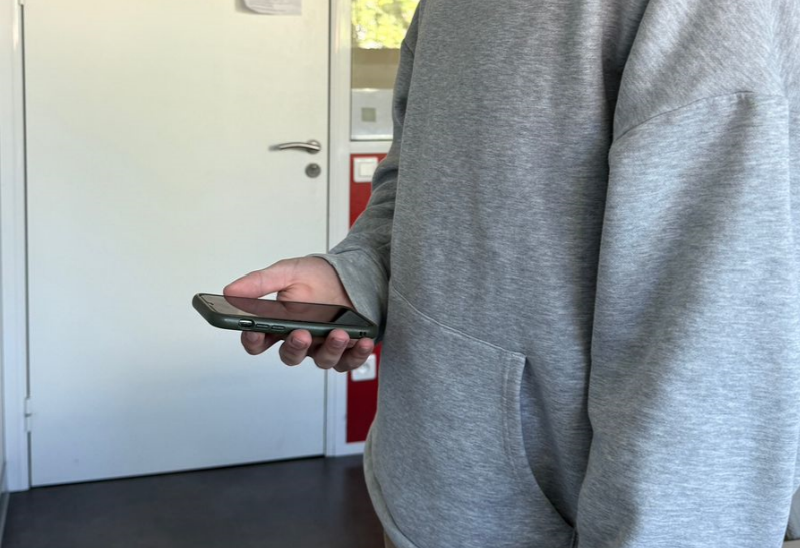

Step 1: Enter Your Information

Please enter your name and the model of your smartphone. This information is optional — if you prefer not to share it, you can simply write “unknown”.
In the next steps, you will perform physical movements while holding your phone in your hand. After completing all steps, you will be able to download your motion data and send it via email to the Virtual UTTOP group. The email address will be shown at the end.
Important:
Hold your phone naturally — as if you were using it for navigation while walking.
Make sure you have enough space to turn, walk, and use a staircase safely.
Be especially careful when going up or down the stairs.
The entire session will take around 5 minutes.
Thank you for your support — and enjoy this short movement session!
Motion Recorder Setup
Ready.
Waiting for data...
Step 15: Send Your Data
You have completed the session — thank you!
Now press the Download button to save the recorded motion data as a CSV file.
Please send the file via email to:
sebastian.meyer@etudiant.uttop.fr
Important note:
If you feel that the movements were not performed correctly, please do not send the data.
You may repeat the session as many times as you like.
Feel free to use it as a short and active break in your daily routine.
Thank you again for your time and your valuable contribution to the Virtual UTTOP project!